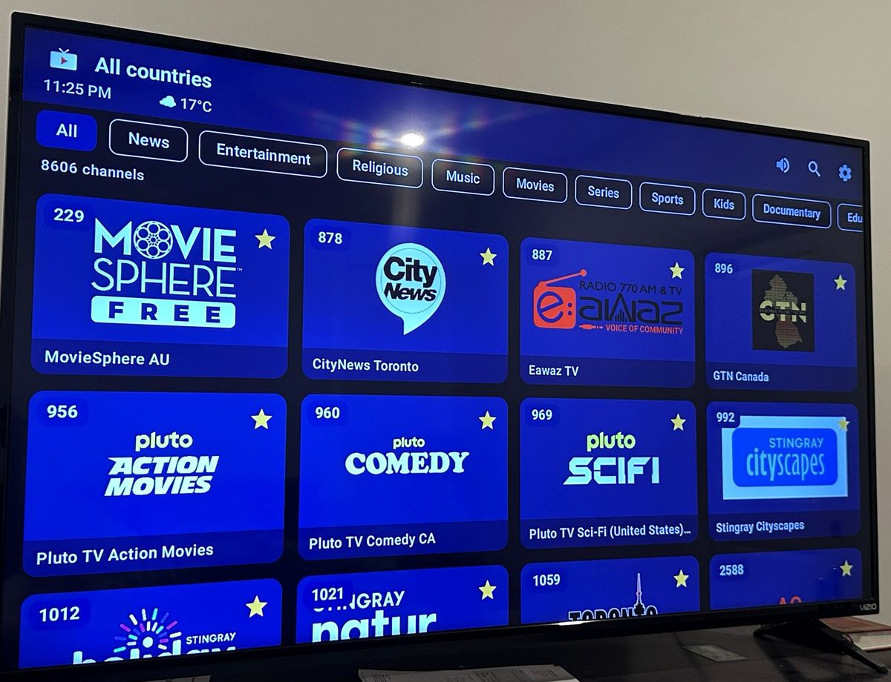
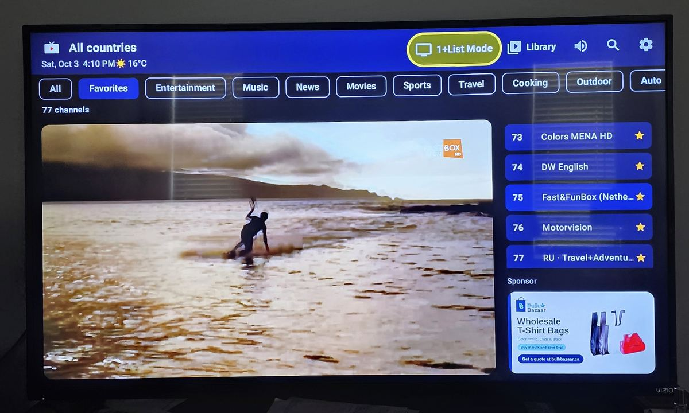
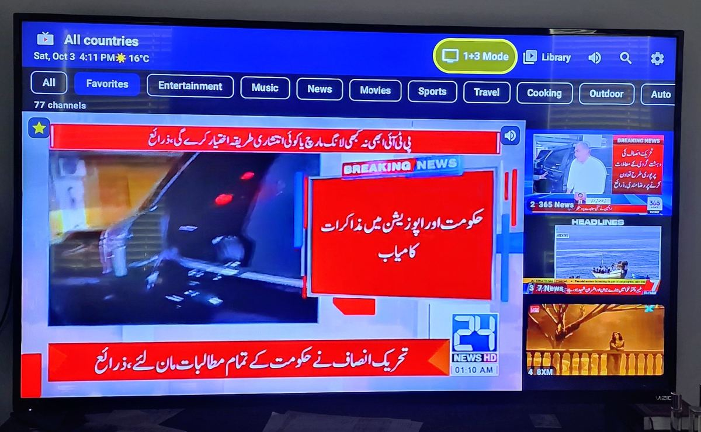
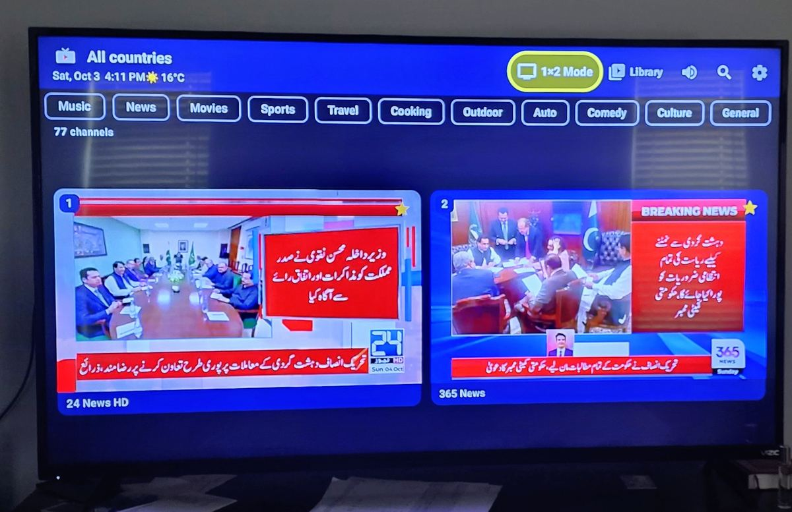
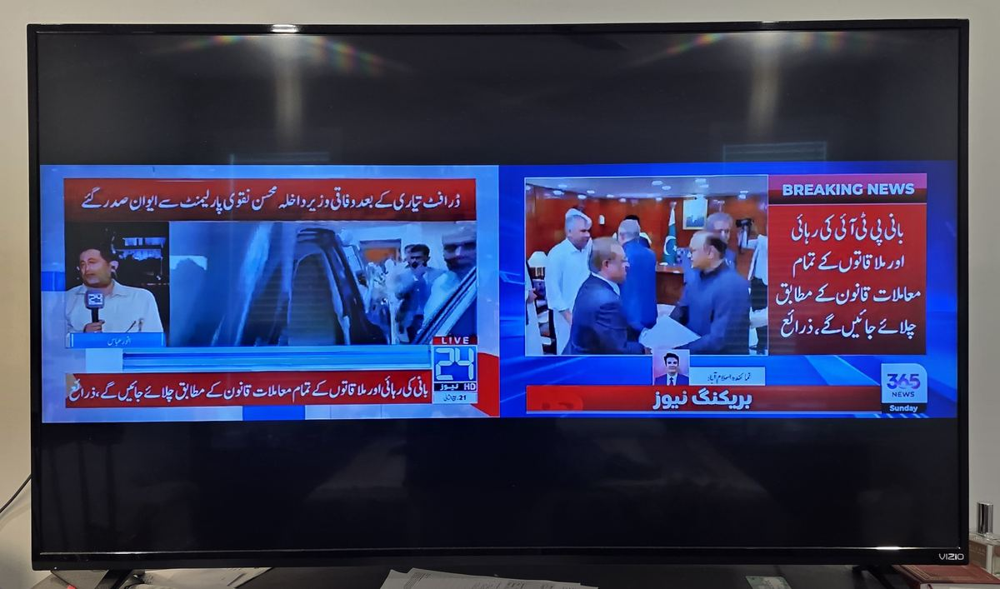
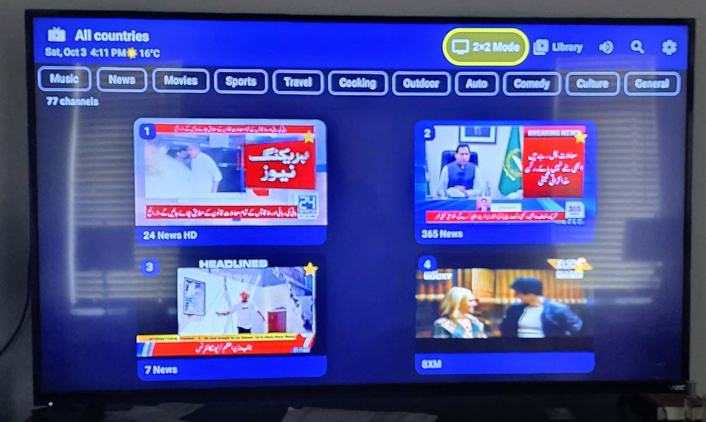
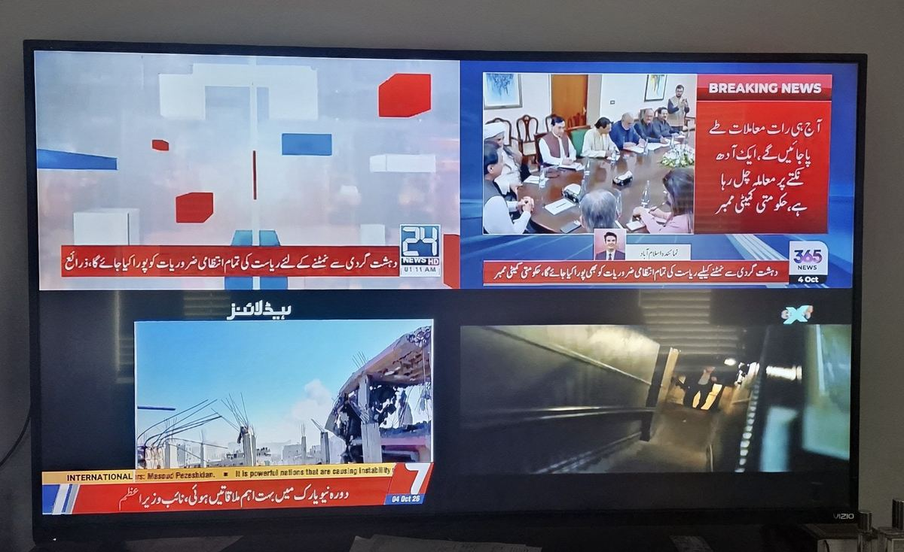
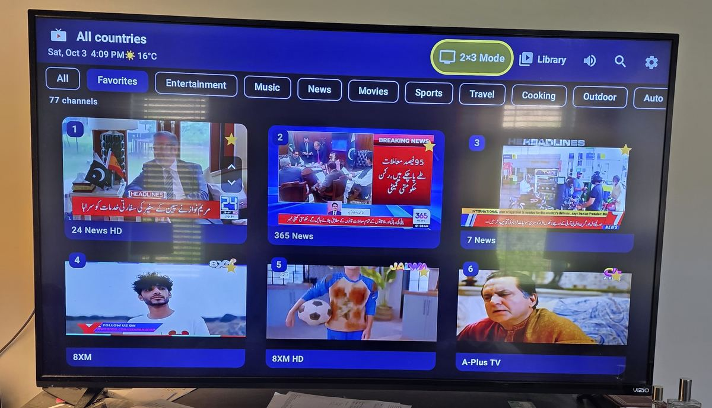
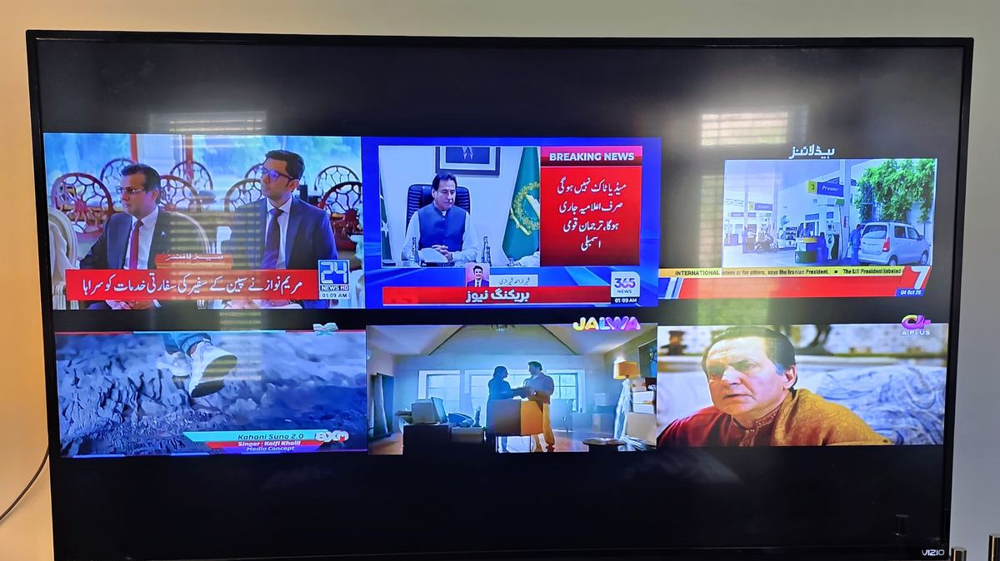

📺 The best app for live TV on your Android TV!
Free live TV, made for your big screenWatch up to 6 channels at the same time on one TV, and on your phone too
Pakistani, Indian, Canadian, British and American channels. Get the Live TV app for Google TV and Android TV, plus Android phones and tablets, or watch here in your browser.
- Free: sign in once with Google
- Thousands of channels
- Free movies and dramas
- Up to 6 channels at once
- Made for the TV remote
- Updates itself

Share Live TV: ⬇ the full video (widescreen) · ⬇ the 25-second phone video for WhatsApp, TikTok or Facebook.
What's in the app
Everything you see here, plus more, in the free Live TV app for Android phones and TVs. Newest version: 1.9.11.
What's new lately
- Make every tile your own: on Home and My Screen, move onto a tile with the arrows and press OK. Change what it shows, its text size, background, corners, border, colour and spacing, plus its own choices (seconds on the clock, the next hours under the weather, all five prayer times and more). The channel is bigger too, and every mode is now in one Modes menu.
- New Browse mode on TV: a home screen like your favourite streaming apps. Big channel cards in rows (Continue watching, Favorites, each country and each genre), a search bar on top and an icon menu on the left. Rest on a card and the channel starts playing right in it; press OK to watch.
- Customize right on the screen: in News, CP24 and My Screen, hold OK on the remote (or tap ⚙ on a phone). A panel opens on the side and you see every change straight away.
- Messages from the Live TV team: when we answer your suggestion, the reply comes to your private Messages, and you can write back. Find it in the app (Settings, ✉ Messages) or on the Suggestions page.
- New My Screen mode on TV: build your own screen. Put the channel on the left, the right, or make it bigger; choose what the four boxes beside it and the panel under it show (clock, weather, prayer times, markets, currency rates, top stories or a second channel); pick glass cards, flat edge to edge or bold headers, and a gold, red, green, blue or purple accent. Everything stretches to fill the screen, with no empty gaps.
- Themes: Settings > Themes opens its own menu with 10 dark themes for the whole app: Midnight, Pure black, Emerald, Royal, Sunset, Ocean, Crimson, Graphite, Black gold and Plum. Make the text Large or Extra large for easy reading from the sofa.
- New Home mode on TV: a modern screen of cards around your channel: the clock with the Islamic date, the weather for the rest of the day, the next prayer with a countdown and a reminder 10 minutes before, sehri and iftar in Ramadan, top stories, markets, currency rates and our sponsor. Press Right for a second channel in the corner.
- New CP24 mode on TV: a big live channel with the top story under it, a red clock (with seconds) and weather column, the next hours' weather, a big box and a line that takes turns between markets, rates, the next prayer and gold, and two scrolling lines along the bottom. Choose what every section shows in Settings.
- Make News mode your own: in Settings, choose what each spot shows: clock and weather, markets, prayer times, currency rates, top stories, or a second live channel (change it with Left and Right). A line of stock prices and rates now crawls along the bottom, like the TV news channels.
- Bigger pictures in 1×2, 2×2 and 2×3: the tiles now touch, edge to edge across the screen, with more room for each channel.
- News mode: all five prayer times (Fajr, Zuhr, Asr, Maghrib, Isha) always show, with today's Islamic date and a countdown to Ramadan and Eid. The Canadian dollar against 12 Asian currencies with their flags, and the price of a tola of gold.
- New News mode on TV: your channel with the sound, plus the clock, weather and 4-day forecast, markets, today's prayer times, top stories from Pakistan, Canada and India, and rupee rates, all on one screen.
- 2×2 on the website: watch 4 channels at once right here in your browser. Try it now.
- Sign in once with Google: it's free and takes a moment. On a TV, scan the code with your phone. One free account works on one device at a time.
- Suggestions: tell us what to improve and reply to other viewers' ideas, in the app (Settings) or on the Suggestions page.
- New 1+3 layout: one big player with the sound, plus three small live tiles on the right showing each channel's number and name. Scroll them with Up and Down, and press OK to swap one into the big player.
- Favourites from the big player: a star shows when the channel is a favourite, and an Add to Favorites button sits right under it.
- Smoother on any TV: the big player always comes first (the small tiles pause for a moment if the TV is busy), and silent tiles don't use any power on sound.
- Watch several channels at once: 2×3, 2×2 and 1×2 layouts where every tile plays its own channel.
- Full-screen tiles: press OK and the tiles fill the whole screen on pure black, with nothing else in the way.
- Easy to see the sound: a thin yellow line and a small speaker mark the tile you're hearing.
- 12 more Pakistani live channels: Geo News, Geo News English, ARY News, Express News, 92 News, Hum News, GNN, Aaj News, BOL News, Suno News, ARY Digital and Kids Land Urdu.
- Library: free movies, dramas and shows in Urdu, Hindi, Punjabi and English, updated every week.
- Date beside the clock, a faster start, a smarter Back button, and a clean screen when you watch one channel (the channel bar hides after a minute).
Full update history
- 1.9.11
- A Modes menu lists every mode in one place. Home and My Screen: move onto any tile with the arrows and press OK to change what it shows, its text size, colours, corners and more; the channel is bigger (about three quarters of the width on My Screen, a quarter bigger on Home). CP24's channel takes three quarters of the width. Every screen's settings have a text size. 2×2 fills the whole width. No more round play button over the channel.
- 1.9.10
- New Browse mode on TV: rows of big channel cards (Continue watching, Favorites, countries and genres), a search bar and an icon menu on the left; the highlighted card plays live.
- 1.9.9
- Customize News, CP24 and My Screen right inside the screen: hold OK (or tap ⚙ on a phone) and a panel opens on the side; every change shows behind it straight away. Themes now have their own menu with 10 dark themes (new: Ocean, Crimson, Graphite, Black gold, Plum). The sponsor card on channel change can show every 2 minutes.
- 1.9.8
- Games: a new Games button with 12 classic games you play with the TV remote (Snake, Falling Blocks, Brick Breaker, Space Defender, Paddle Ball, 2048, Tic-Tac-Toe, Four in a Row, Mines, Memory Cards, Slide Puzzle, Color Echo). Your best scores are kept; on phones there are on-screen buttons.
- 1.9.7
- Private messages: replies from the Live TV team to your suggestions and any message the team sends you arrive in ✉ Messages (in Settings and on the website), and you can write back there. The app tells you when a new one arrives.
- 1.9.6
- My Screen: a new layout you build yourself in Settings. Pick where the channel goes, up to four boxes beside it and one under it, a style (glass cards, flat edge to edge, bold headers) and an accent colour. Every part stretches to fill the screen; the sponsor and the advertising line always stay.
- 1.9.5
- Themes and styles in Settings: six colour themes for the whole app (Midnight, Pure black, Emerald, Royal, Sunset, Light) and three text sizes.
- 1.9.4
- Home mode for TVs: modern cards with clock, weather, the next prayer and reminders, Ramadan sehri and iftar countdown, top stories, markets, rates, the sponsor, and a second channel in the corner (Right).
- 1.9.3
- CP24 mode for TVs, laid out like the Toronto news channel, with a choice for every section in Settings (Customize CP24 screen).
- 1.9.2
- Customize News screen in Settings: pick what each spot shows, including a second live channel; a crawling line of stock prices, currency rates and gold along the bottom.
- 1.9.1
- 1×2, 2×2 and 2×3 tiles touch edge to edge, with the sponsor banner under them; 2×2 gets a thin ticker. News mode: all five prayer times always show, Islamic date with a Ramadan and Eid countdown, Asian currencies with flags, gold per tola, and a QR code to call or visit the sponsor.
- 1.9.0
- The weather and prayer times follow where your device is (it asks once), or a city you type in Settings.
- 1.8.99
- News mode for TVs: a live channel with weather, forecast, markets (TSX, S&P 500, Dow, KSE-100, Sensex, gold), prayer times, top stories, rupee rates, the scrolling line and a sponsor corner that can play a short video.
- 1.8.98
- Sponsor spots in every layout: a bar under the players in 2×2 and 2×3, and a picture under the side tiles in 1+3.
- 1.8.97
- The "advertise with us" line now runs every 30 seconds in every layout, bigger above the players in 1×2 and 2×2.
- 1.8.96
- A short "advertise with us" line scrolls by now and then, with our WhatsApp number.
- 1.8.95
- 1+3: the three side tiles now fill the exact height of the big player, top to bottom.
- 1.8.94
- Fix: the sponsor bar now shows under the two pictures in 1×2 on TVs.
- 1.8.93
- The 1×2 sponsor bar can show a sponsor's own wide banner.
- 1.8.92
- In 1×2, a slim sponsor bar now sits in the space under the two channels.
- 1.8.91
- The "Sponsor" tag no longer covers the sponsor's picture.
- 1.8.90
- Sponsors: the start screen, a small strip under the 1+List channel list, and now and then a small corner card after a channel change show the businesses that keep Live TV free. Want your business here? See Advertise.
- 1.8.89
- New sponsor message wording on the start screen.
- 1.8.88
- The app now counts which channels are watched and for how long (totals only), for the new viewing stats page. See the privacy policy.
- 1.8.87
- When the channel bar hides in full screen, the channel number stays small in the top-left corner for 5 minutes.
- 1.8.86
- In full screen, the channel bar now stays for 10 seconds, and pressing OK brings it back when it is hidden.
- 1.8.85
- With fewer than 6 favourites, a short reminder to save some shows over the first channel after the app starts. The channel bar now hides after 5 seconds.
- 1.8.84
- Live channels now fill the whole screen in full-screen mode, with no black bars.
- 1.8.83
- Favorites are grouped by country and numbered 1 to 100. While watching, type a channel number with the remote's number buttons or the new 123 pad. The channel bar now hides after 20 seconds.
- 1.8.82
- On a TV, the app now opens the channel you watched last straight in full screen; Back takes you to 1+List.
- 1.8.81
- Sign in with Google (once; TVs show a code to confirm on your phone). One free account works on one device at a time. New Suggestions forum in Settings and at tv.bulkbazaar.ca/suggestions. Privacy policy.
- 1.8.80
- 1+3: a star shows on the big player when its channel is a favorite, and an Add to Favorites button sits under it (press Down). The big player now always comes first: if the TV runs short of power, the side tiles pause on their last picture until it runs smoothly again.
- 1.8.79
- 1+3: the side tiles keep showing the channel number and name.
- 1.8.78
- 1+4 is now 1+3: the big player top left with three small tiles on the right, centred beside it. Up/Down move through them and a new channel slides in at the end. OK on the big player opens it (no full screen view in 1+3).
- 1.8.77
- 1+4 reworked: the big player sits top left (85% wide) with small tiles down the right side and along the bottom, as many as fit. Up/Down move through the side tiles and Left/Right through the bottom ones; at the end of either, a new channel slides in. OK sends one to the big player.
- 1.8.76
- New 1+4 layout: one big player (75% of the screen, the only one with sound) and four small players on the right; OK on a small one swaps it into the big player. The 16-tile layout was removed.
- 1.8.75
- Only the tile with the speaker decodes sound, so many tiles play more easily on a TV.
- 1.8.74
- The layout button now steps through the layouts in order, starting with 1+List.
- 1.8.73
- Small tiles use half the picture size again, so more of them can play at once.
- 1.8.72
- Lighter video when several tiles play.
- 1.8.71
- Pure black around full-screen tiles. Thin yellow line and speaker on the sound tile in every TV layout. The channel bar hides after a minute on one channel.
- 1.8.70
- Today's date beside the clock.
- 1.8.69
- Full-screen tiles sit together with no gaps between rows. Lighter video when several tiles play.
- 1.8.68
- 2×3 plays all six tiles. No yellow outline on TV layouts; a small speaker shows the sound tile. OK fills the screen with the tiles in every TV layout.
- 1.8.67
- OK on a 2×2 or 1×2 tile fills the screen with the tiles; OK again opens one channel, Back returns.
- 1.8.66
- 2×2 layout (four TVs at once). Channels load during the welcome screen. Back closes search, then goes to the top bar; press Back twice to leave. MTA channels fixed.
- 1.8.65
- 12 Pakistani channels streamed live from their own YouTube channels. Optional MTA tick box in Settings (8 live channels, 64 programmes), off unless you turn it on. "Thank you" line removed from the start screen.
- 1.8.64
- More Library sources: Dailymotion, Wikimedia Commons, NASA, Vimeo, PeerTube and more Internet Archive films, each title once. TVs open in 1+List, on Favorites, on the channel watched last. Favorites hold up to 100 channels.
- 1.8.57 to 1.8.63
- The Library: free classic movies, Pakistani dramas from official channels, Hindi dubbed movies, then Urdu, Hindi, Punjabi and English sections with a folder per drama and a "Weekly Updates" note. Layout button labels and TV icon.
- 1.8.37 to 1.8.56
- The layout button and the 1+List layout (one player with the channel list beside it). Favorites button. Tiles slide one channel at a time. App Bazaar link for more free apps.
- 1.8.24 to 1.8.36
- Live previews on the tiles, speaker button for preview sound, TV tiles sized so only whole rows show, automatic updates.
- 1.8.8 to 1.8.19
- "Working channels only" list checked every day, your own playlists, countries and languages in Settings, clock and weather, genre row, favourites first.
1+3NEW
A big player in the top left with the sound, and three small live tiles beside it that always show the channel number and name. Up and Down scroll through more channels; OK swaps one into the big player. Press Down under the big player to add it to your favourites.
Several channels at once
On a TV, pick 2×3 (6 channels), 2×2 (4) or 1×2 (2). Every tile plays its own channel, like separate TVs. Press OK to fill the whole screen with the tiles.
1+List
One big player with the channel list beside it. The app opens here each time, on your Favorites, playing the channel you watched last.
See where the sound is
A thin yellow line and a small speaker mark the tile you're hearing. Move left or right to hear another tile (in 1+3 the sound stays on the big player). Only that tile plays sound, so the others run lighter. The speaker button at the top mutes it.
Library
Free movies, dramas and shows. Pick Urdu, Hindi, Punjabi or English, then Movies, Series, Shows or Kids. Each drama has its own folder, and new episodes arrive every week. Only official channels and public-domain films.
Pakistani news and dramas
Over 60 Pakistani channels, including Geo News, ARY News, ARY Digital, Express, Hum News, Dunya, Samaa and Kids Land Urdu. Plus Indian, Canadian, British and American channels.
Favourites
Hold OK on a channel (or tap its star on a phone) to add it. Favourites come first, and the Favorites button shows just them, up to 100 channels.
Pick by genre
One row at the top: All, Favorites, News, Entertainment, Religious, Music, Movies, Sports, Kids and more.
Your countries and languages
Starts with Pakistani, Indian (Hindi, Urdu, Punjabi), Canadian, British and American channels. Add any country or language in Settings.
Working channels only
An optional list of channels we check every day, so dead links are left out. You can also add your own playlists.
Clock, date and weather
The time, today's date and your local weather sit at the top of the screen.
Quick and up to date
Channels load while the welcome screen shows, and the channel bar hides after a minute so you see only the picture. New versions download on their own; just press Install, and your favourites and settings are kept.
Using the remote
| Left / Right | Move between tiles; the sound moves with you |
| Up / Down | On a tile in 2×3, 2×2 or 1×2: change that tile's channel. In 1+3: scroll through the small tiles. While watching one channel: previous or next channel (Channel +/- works too) |
| OK | Fill the screen with the tiles; OK again opens that channel on its own. In 1+3: OK on a small tile puts it in the big player, OK on the big player opens it |
| Hold OK | Add or remove a favourite |
| Back | Return to the tiles, then to the top bar. Press Back twice to leave the app. Back also closes search |
| TV button (top) | Switch layout: 1+List, 1+3, 1×2, 2×2 or 2×3 |
| Library (top) | Free movies, dramas and shows |
| Speaker (top) | Turn tile sound on or off |
| Gear (top right) | Settings: channel list, countries, languages, your playlists, MTA |
See it on a TV
Real photos of Live TV on a Chromecast with Google TV. Press the TV button at the top to switch layouts.








Watch live
Pick a channel to start watching. Use Add a country to see channels from anywhere in the world. Some channels only play in the app or in their own country.
Loading channels…
Get the app
For Android phones, tablets, Google TV, Android TV and Fire TV. It's not in the Play Store, so follow the install guide below. It takes about two minutes.
The link always gives the newest version (about 22 MB).
On a TV, type this in the Downloader app:
If the short link doesn't work, use the full link:
github.com/NaseerBabar786/live-tv-app/releases/latest/download/LiveTV.apk
How to install
Choose your device. You can also open the full guide as a PDF.
- On the phone, open Chrome and go to tinyurl.com/2y669ug7, or scan the QR code above with the camera.
- If Chrome warns that the file might be harmful, tap Download anyway.
- When it finishes, tap Open. Or open the My Files app, go to Downloads and tap LiveTV.apk.
- If you see "your phone is not allowed to install unknown apps from this source", tap Settings, turn on Allow from this source, then press Back.
- Tap Install.
- If Google Play Protect blocks it, tap More details, then Install anyway.
- Tap Open. Live TV is now in your app list.
- Tap Sign in with Google and pick your account. You only do this once.
TVs don't have a normal web browser, so you use the free Downloader app.
A. Install Downloader (one time only)
- On the TV home screen, open Search and search for Downloader. Install Downloader by AFTVnews (orange icon).
B. Allow Downloader to install apps (one time only)
- Open Settings › System › About.
- Press OK on Android TV OS build 7 times until you see "You are now a developer".
- Go back to Settings › Apps › Security & restrictions › Unknown sources.
- Turn on Downloader.
C. Download and install Live TV
- Open Downloader. Allow it to access files if it asks.
- Type tinyurl.com/2y669ug7 in the box and press Go. If that fails, type the full link shown above.
- Wait for the download to reach about 22 MB, then press Install. If Play Protect warns you, choose Install anyway.
- Press Open, or Done and then Delete to remove the downloaded file.
- Live TV shows a code. On your phone, scan the QR code or go to google.com/device, enter the code and pick your Google account. The TV carries on by itself.
- To pin Live TV to the home screen, highlight it, hold OK and choose Add to favourites.
- Install Downloader from the Amazon Appstore.
- Go to Settings › My Fire TV › Developer options › Install unknown apps and turn on Downloader. If Developer options is missing, open Settings › My Fire TV › About and press OK on your device name 7 times.
- Follow part C of the Google TV steps.
- Open Live TV. When it starts, it checks for a new version and downloads it by itself (Updating Live TV).
- The first time, Android may ask you to allow Live TV to install apps. Turn it on and press Back; the update carries on.
- Android shows its own install screen. Select Install (or Update), and Install anyway if Play Protect asks. Your favourites and settings are kept.
- From version 1.8.81, Live TV asks you to sign in with Google once. A free account works on one device at a time.
"App not installed"
An older copy (before version 1.7.2) is on the device. Uninstall Live TV once, then install again.
"There was a problem parsing the package"
The download was incomplete. Delete it and download again, checking it is about 22 MB. On a TV, try the full link.
A channel doesn't play
The broadcaster may be offline, or the channel only plays in its own country (marked Geo-blocked). Some channels play in the app but not in a web browser. In the app, Settings › Channel list › Working channels only hides channels that failed our daily check.
Blocked by Play Protect
Tap More details, then Install anyway. Live TV isn't in the Play Store, so Google shows this warning for it.
Live TV is free thanks to our sponsor, Bulk Bazaar Inc. Please show them love: visit bulkbazaar.ca and leave them a 5-star review ★★★★★
Enjoying Live TV? Please share it with your family and friends!